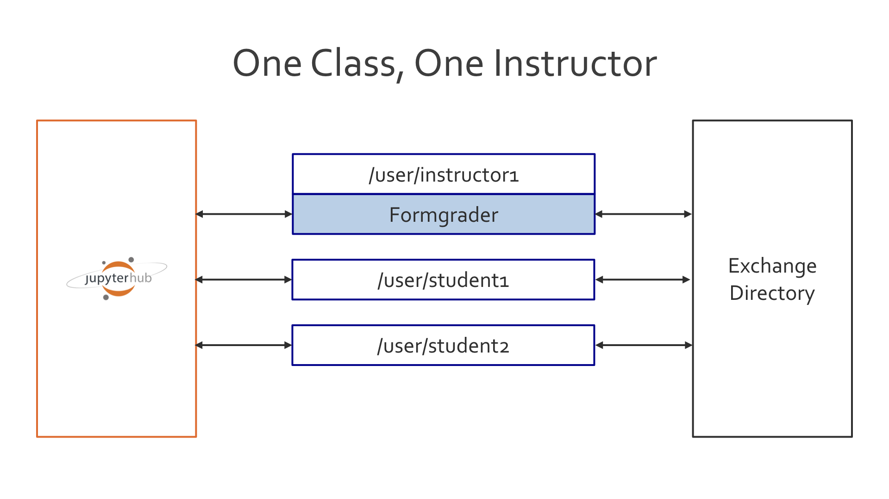
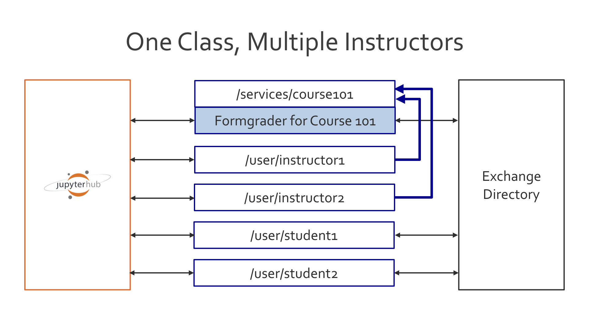
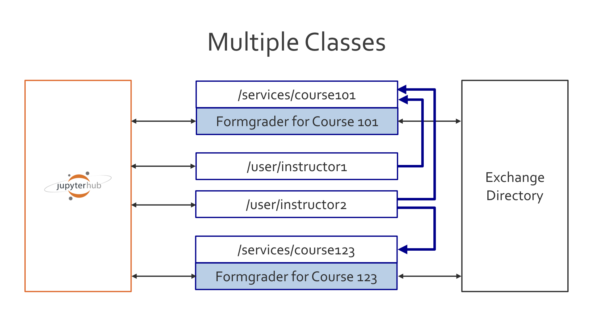
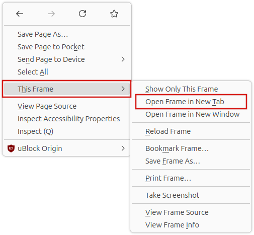

Using nbgrader with JupyterHub#
See also
- /user_guide/creating_and_grading_assignments
Documentation for
nbgrader generate_assignment,nbgrader autograde,nbgrader formgrade, andnbgrader generate_feedback.- /user_guide/managing_assignment_files
Documentation for
nbgrader release_assignment,nbgrader fetch_assignment,nbgrader submit, andnbgrader collect.- The nbgrader_config.py file
Details on how to setup the
nbgrader_config.pyfile.- /user_guide/philosophy
More details on how the nbgrader hierarchy is structured.
- JupyterHub Documentation
Detailed documentation describing how JupyterHub works, which is very much required reading if you want to integrate the formgrader with JupyterHub.
Warning
For security reasons, iframe are not allowed with JupyterHub from version 4.1. The
documentation about this security change is at
mitigating-same-origin-deployments.
In the current version of nbgrader, the formgrader UI is embedded in an iframe, to
be available in a new tab of Jupyterlab or Notebook. Therefore, the formgrader UI can’t
be loaded when using jupyterhub>=4.1, and shows a blank panel instead.
There are several ways to use the formgrader with jupyterhub>=4.1, see details
at Formgrader with jupyterhub>=4.1.
For instructors running a class with JupyterHub, nbgrader offers several tools
that optimize and enrich the instructors’ and students’ experience of sharing
the same system. By integrating with JupyterHub, nbgrader streamlines the
process of releasing and collecting assignments for the instructor and of
fetching and submitting assignments for the student. In addition to using the
nbgrader release_assignment, nbgrader fetch_assignment, nbgrader submit, and nbgrader
collect commands (see /user_guide/managing_assignment_files) with a
shared server setup like JupyterHub, the formgrader (see
/user_guide/creating_and_grading_assignments) can be configured to
integrate with JupyterHub so that all grading can occur on the same server.
Warning
When using nbgrader with JupyterHub, it is strongly recommended to set a
logfile so that you can more easily debug problems. To do so, you can set
a config option, for example NbGrader.logfile = "/usr/local/share/jupyter/nbgrader.log".
Each of these use cases also has a corresponding demo in the demos folder of the GitHub repository.
Example Use Case: One Class, One Grader#
The formgrader should work out-of-the-box with JupyterHub if you only have a
single grader for your class: all you need to do is make sure that you have
installed and enabled the nbgrader extensions (see
/user_guide/installation) and then make sure the path to your course
directory is properly set in the instructor’s nbgrader_config.py. For
example, if the instructor account is called instructor and your course
directory is located in /home/instructor/course101/, then you should have
a file at /home/instructor/.jupyter/nbgrader_config.py with contents like:
c = get_config()
c.CourseDirectory.root = '/home/instructor/course101'
The following figure describes the relationship between the instructor account, the student accounts, and the formgrader on JupterHub. In particular, note that in this case the formgrader is running directly on the instructor’s account:

Example Use Case: One Class, Multiple Graders#
If you have multiple graders, then you can set up a shared notebook server
as a JupyterHub service. I recommend creating a separate grader account (such
as grader-course101) for this server to have access to.
The following figure describes the relationship between the instructor accounts, the student accounts, and the formgrader on JupterHub. In particular, note that in this case the formgrader is running as a separate service, which each instructor then has access to:

You will additionally need to install and enable the various nbgrader extensions for different accounts (see /user_guide/installation). This table should clarify which extension to enable when you have separate services for the formgraders.
Students |
Instructors |
Formgraders |
|
|---|---|---|---|
Create Assignment |
no |
no |
yes |
Assignment List |
yes |
yes |
no |
Formgrader |
no |
no |
yes |
Course List |
no |
yes |
no |
Your JupyterHub should look something like this:
c = get_config()
# Our user list
c.Authenticator.whitelist = [
'instructor1',
'instructor2',
'student1',
]
# instructor1 and instructor2 have access to a shared server:
c.JupyterHub.load_groups = {
'formgrade-course101': [
'instructor1',
'instructor2'
]
}
# Start the notebook server as a service. The port can be whatever you want
# and the group has to match the name of the group defined above. The name
# of the service MUST match the name of your course.
c.JupyterHub.services = [
{
'name': 'course101',
'url': 'http://127.0.0.1:9999',
'command': [
'jupyterhub-singleuser',
'--group=formgrade-course101',
'--debug',
],
'user': 'grader-course101',
'cwd': '/home/grader-course101'
}
]
Similarly to the use case with just a single grader, there needs to then be a nbgrader_config.py file in the root of the grader account, which points to the directory where the class files are, e.g. in /home/grader-course101/.jupyter/nbgrader_config.py:
c = get_config()
c.CourseDirectory.root = '/home/grader-course101/course101'
You will additionally need to add a global nbgrader config file (for example,
in /etc/jupyter/nbgrader_config.py) which specifies the course id:
c = get_config()
c.CourseDirectory.course_id = 'course101'
This course id MUST match the name of the service that is running the formgrader.
Example Use Case: Multiple Classes#
As in the case of multiple graders for a single class, if you have multiple
classes on the same JupyterHub instance, then you will need to create multiple
services (one for each course) and corresponding accounts for each service
(with the nbgrader extensions enabled, see /user_guide/installation).
For example, you could have users grader-course101 and
grader-course123 which access services called course101 and course123, respectively.
The following figure describes the relationship between the instructor accounts and the formgraders on JupterHub (student accounts are not shown, but are the same as in Example Use Case: One Class, Multiple Graders). In particular, note that in this case each formgrader is running as a separate service, which some combination of instructors then have access to:

JupyterHub Authentication#
Added in version 0.6.0.
With the advent of JupyterHubAuthPlugin, nbgrader will ask JupyterHub which students are enrolled in which courses and only show them assignments from those respective courses (note that the JupyterHubAuthPlugin requires JupyterHub version 0.8 or higher). Similarly, nbgrader will ask JupyterHub which instructors have access to which courses and only show them formgrader links for those courses.
On the JupyterHub side of things, to differentiate student from instructor, groups need to be named formgrade-{course_id} for instructors and and grader accounts, and nbgrader-{course_id} for students. The course service additionally needs to have an API token set that is from a JupyterHub admin (see JupyterHub documentation).
As in the case of multiple graders for a single class, if you have multiple
classes on the same JupyterHub instance, then you will need to create multiple
services (one for each course) and corresponding accounts for each service
(with the nbgrader extensions enabled, see /user_guide/installation).
For example, you could have users grader-course101 and
grader-course123. Your JupyterHub config would then look something like
this:
c = get_config()
# Our user list
c.Authenticator.whitelist = [
'instructor1',
'instructor2',
'student1',
'grader-course101',
'grader-course123'
]
c.Authenticator.admin_users = {
'instructor1',
'instructor2'
}
# instructor1 and instructor2 have access to different shared servers:
c.JupyterHub.load_groups = {
'formgrade-course101': [
'instructor1',
'grader-course101',
],
'formgrade-course123': [
'instructor2',
'grader-course123'
],
'nbgrader-course101': [],
'nbgrader-course123': []
}
# Start the notebook server as a service. The port can be whatever you want
# and the group has to match the name of the group defined above.
c.JupyterHub.services = [
{
'name': 'course101',
'url': 'http://127.0.0.1:9999',
'command': [
'jupyterhub-singleuser',
'--group=formgrade-course101',
'--debug',
],
'user': 'grader-course101',
'cwd': '/home/grader-course101',
'api_token': '' # include api token from admin user
},
{
'name': 'course123',
'url': 'http://127.0.0.1:9998',
'command': [
'jupyterhub-singleuser',
'--group=formgrade-course123',
'--debug',
],
'user': 'grader-course123',
'cwd': '/home/grader-course123',
'api_token': '' # include api token from admin user
},
]
Note: As you can see the nbgrader-{course_id} group is an empty list.
Adding students to the JupyterHub group is automatically done when the
instructor adds them to the course database with the nbgrader db student
add command or through the formgrader.
On the nbgrader side of things, activating the JupyterHubAuthPlugin requires
you to add it as an authentication plugin class into the nbgrader_config.py
for all accounts. This is easiest to do by putting it in a global location such
as /etc/jupyter/nbgrader_config.py. You also need to configure nbgrader to
look for assignments in a subdirectory corresponding to the course name (see
Can I use the “Assignment List” extension with multiple classes?). For example:
from nbgrader.auth import JupyterHubAuthPlugin
c = get_config()
c.Exchange.path_includes_course = True
c.Authenticator.plugin_class = JupyterHubAuthPlugin
There also needs to be a separate nbgrader_config.py file in the root of
each grader account, which points to the directory where the class files are
and which specifies what the course id is, e.g.
/home/grader-course101/.jupyter/nbgrader_config.py would be:
c = get_config()
c.CourseDirectory.root = '/home/grader-course101/course101'
c.CourseDirectory.course_id = 'course101'
and /home/grader-course123/.jupyter/nbgrader_config.py would be:
c = get_config()
c.CourseDirectory.root = '/home/grader-course123/course123'
c.CourseDirectory.course_id = 'course123'
Finally, you will again need to enable and disable different combinations of the nbgrader extensions for different accounts. See the table in Example Use Case: One Class, Multiple Graders for details.
Custom Authentication#
Added in version 0.6.0.
To make your own custom authentication such as through an LTI you could start by making a method that inherits the Authenticator class, which is a plugin for different authentication methods.
There are now four authentication classes:
BaseAuthPlugin: Inherit this class when implementing your own plugin, thought of as a way to enable LTI use cases. This class is never called directly.NoAuthPlugin: The default old behaviour. Using this plugin will allow any user to any course if they do not have a course_id in their nbgrader_config. This is still the default behaviour so no need to specify it in/etc/jupyter/nbgrader_config.pyJupyterHubAuthPlugin: Uses the Jupyterhub groups part of the JupyterHub API for authentication.Authenticator: Configurable for different plugins.
API#
Formgrader with jupyterhub>=4.1#
As explained above in the warning, jupyterhub>=4.1 does not allow iframe for security
reasons, which lead to blank panel instead of the formgrader UI.
Below are different ways to use the formgrader UI with jupyterhub>=4.1.
Opening the formgrader UI in a new browser tab#
Web browsers are able to open iframes in a new browser tab, which allows using the
formgrader without any additional setting on the jupyterhub server.
For example with Firefox, right clicking on the iframe shows a context menu to open the
contents in a new browser tab.

Although this solution isn’t the most practical, it does allow to use `formgrader
without having to update the configuration and without adding vulnerabilities to the application.
Enabling JupyterHub subdomains#
Enabling per-user and per-service subdomains with JupyterHub.enable_subdomains = True
allows to securely use iframes with JupyterHub.
With subdomains enabled, frame-ancestors ‘self’ allows embedding the iframe only on pages
served by the user’s own server.
In this case, the "frame-ancestor 'self'" can be restored in the application:
c.ServerApp.tornado_settings = {}
c.ServerApp.tornado_settings["headers"] = {
"Content-Security-Policy": "frame-ancestors 'self'"
}
in e.g. /usr/local/etc/jupyter/jupyter_server_config.py.
Trusting users (less secure)#
If you trust users and are aware of the security vulnerability, it is also possible to enable the iframe with the same configuration as above, without subdomains.
This is the solution used in the JupyterHub docker demo.